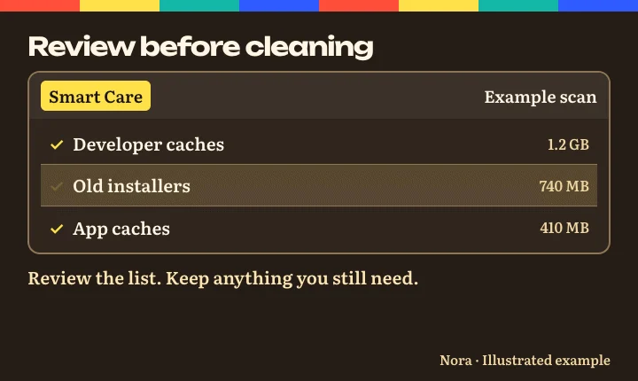
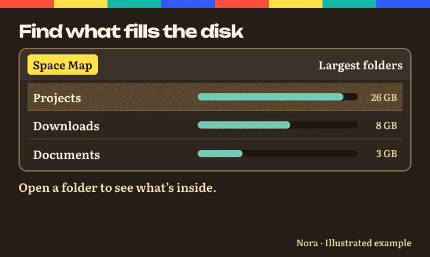
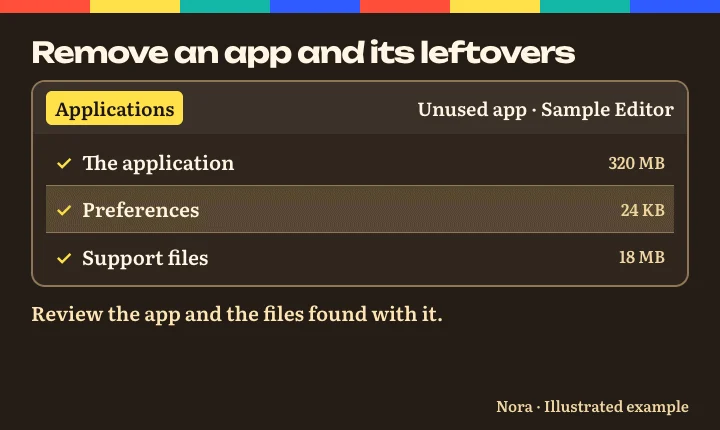
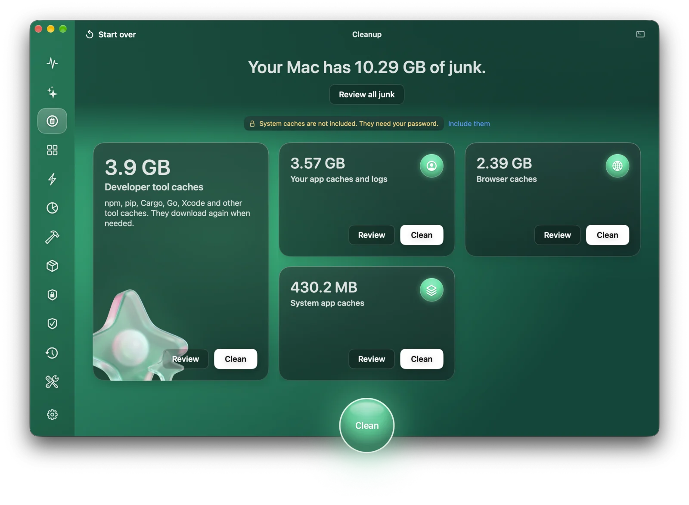

Your Mac says it’s running out of space.
Smart Care looks for material you may be able to clear. Nora shows the list before cleanup. Untick what you want to keep and start only when you’re ready.

See what’s taking up space, review what can go, and clean up when you’re ready. Nora puts that whole job in one Mac window.
Already use Mole? Nora gives its tools a native Mac interface.
About 8 MB · macOS 14+ · Apple silicon and Intel
Illustrated examples. The actions happen in the app.
Smart Care looks for material you may be able to clear. Nora shows the list before cleanup. Untick what you want to keep and start only when you’re ready.

Open Space Map to see the largest folders and files. Go one level deeper until you find what you were looking for.

Open Applications to review the app and its related files before removing them. Nora also shows available updates and large or rarely used apps.

See what’s using the processor or memory from the menu bar. Run a malware scan when you need one. ClamAV is an optional installation.

Open the downloaded disk image and drag Nora into Applications.
Follow the prompt to install Mole if it’s missing.
Open Smart Care, scan and review the results before you run anything.
A scan shows what Nora found. Cleanup starts after you act on the review. Some cleanup categories are removed permanently, so read the list before continuing.
Nora can scan for known malware with ClamAV after you install it. It works alongside macOS protections.